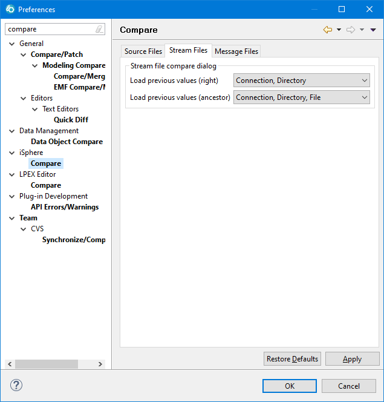

The available options for comparing source members are:
| Load previous values (right) | - | Specifies
whether previous values of the right member are loaded when opening the source member
compare dialog. The values selected are preserved. All other values are taken from the
Left Member. This option is useful, when you want to compare members from one source file with the members of another source file. In that case you would select option Connection, Library, File. |
| Load previous values (ancestor) | - | Specifies whether previous values of the ancestor member are loaded when opening the source member compare dialog. The values selected are preserved. All other values are taken from the Left Member |
| Ignore white spaces | - | Specifies whether white spaces are ignored when comparing source members. |
| File extensions | - | Specifies the file extensions that are assigned to the Ignore Date Column filter when comparing source members. |